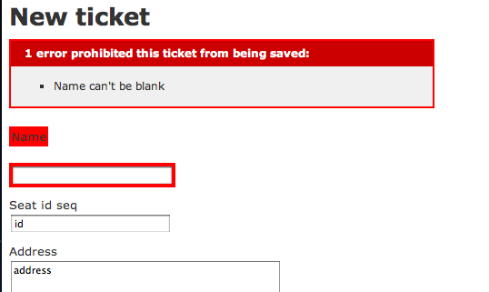
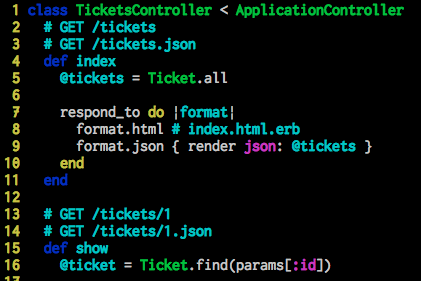

第2回 Actibu Ruby勉強会
2012/05/18 講師：akiinyo参考文献：Head First Rails 第1章
書記：shimosuk
モデル
下図はapp/models/ticket.rbのscaffold既存のコードに新たに制約を加えたものである。

モデルには、データベースとの連携を行うためのクラスが格納されている。
コード中attr_accessibleは、代入を許可するカラムを指定するもの。反対はattr_protectedで、代入を制限するカラムを指定する。
(制限するのはカラムを一括して扱うメソッドに対してだけで、カラムに対応するメソッドを使って代入することは可能。)
もし、データベースに登録する際に制約(validation)をかける場合は別途定義する必要があり、
例えば、validates :name, presence: trueは編集、登録の際に、入力を必須にするような制約をかけるものである。
ただし、attr_accessibleはrails 3.0.0では自動生成されないので注意が必要。

図は、入力必須の制約をかけたnameに値を入力しないで入力した場合の表示。
バリデーション設定前までは無かった画面。
コントローラ
コントローラは、アプリケーションがどのように動くかを定める部分。
例えば、モデルからのデータをどのビューで表示するかを決める。
下図は、app/controllers/tickets_controller.rbのindexメソッドに着目したもの。

コントローラーのメソッドは、アクションメソッドと呼ばれ、ビューの中で対応したHTMLファイルとの連携が可能である。
今回着目したindexメソッドの場合は、それがビューのapp/views/tickets/index.html.erbにあたる。
respond_toメソッドは、指定されたフォーマットに応じて異なるテンプレートを呼び出すためのしくみ。
urlで指定されたフォーマットがhtmlであれば、index.html.erbを、xmlであれば@ticketsの内容をXML形式で出力する。
デフォルトはhtmlなので、respond_toを明示的に記述しなければ、index.html.erbを出力する。
コントローラがビューやモデルとどのような関係を持っているかはビューの解説後。
ビュー
アプリケーションに触れた際に実際に見える部分。
ボタンの配置や見え方などの表示に関わる。
コードはapp/views/tickets/index.html.erbのもの。

図はhttp://localhost:3000/ticketsでアクセスした際に表示される画面のコードにあたり、
そのurlの規則はconfig/routes.rbで定められる。（詳細は後述）
コード中の<%=と%>で囲まれている部分はRubyで書かれている。
また、<% @tickets.each do |ticket| >の@ticketsはコントローラで設定した値である。
コントローラとのしごと
コントローラで使用した図の5行目@tickets = Ticket.allを見てみる。
左辺@ticketsは、ビューからの参照が可能になっており、実際にビューの15行目のような形で参照され、17行目から24行目のような形で表示に使用されてる。
右辺Ticket.allは、モデルのticketクラスに、どのようなデータを取得するかを指示している。
allというのはモデルのticketクラスが継承しているactiverecord::baseのメソッド(推測につき確認が必要)でSELECT * FROM ticketsを発行する。
他にも詳細画面show.html.erbのアクションメソッドshowではfindが、新規追加画面のアクションメソッドnewではnewが使用されている。
どんなSQLが発行されているのかはプロンプト上にrails cと入力し専用のコンソールを立ち上げることで、モデルがデータベースに送るリクエストを確認できる。(終了する場合は exit)
また、発行されたSQL文から比較的見やすい表示でデータを見たい場合はrails dbconsoleでデータベースを参照することも可能である。(終了は .q)
URL設計
画面毎にどのような規則でURLが割り当てられるかを学ぶ。
config/routes.rbを見る。

Scaffoldでアプリを生成すると、このように記述される。
rake routesコマンドを叩くと、定義されているルートを確認することができる。
resourcesでルート定義されるメソッドは、index, show, new, create, edit, update, destroy の7つ。